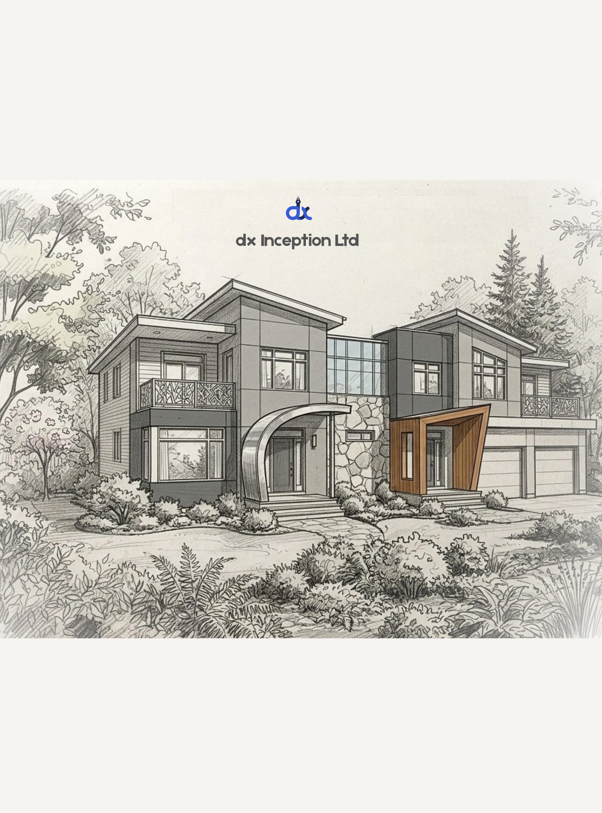
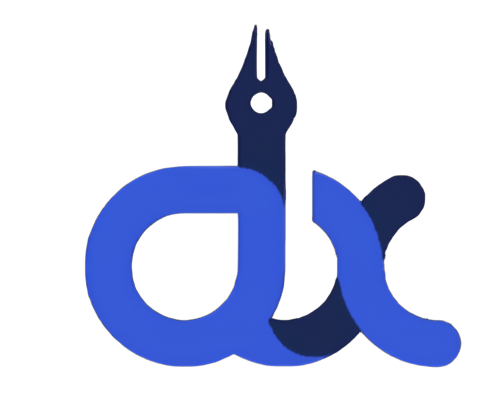
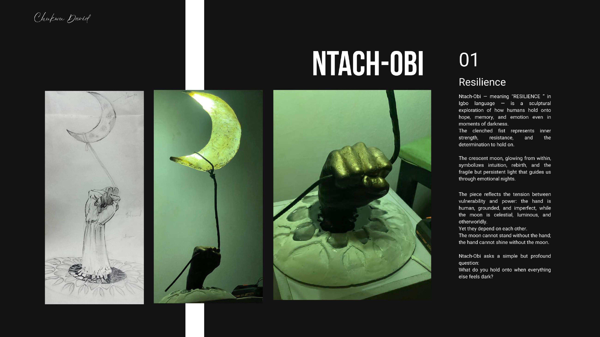
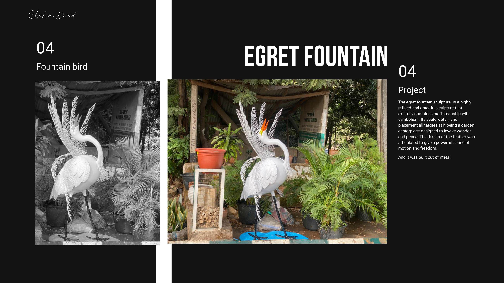
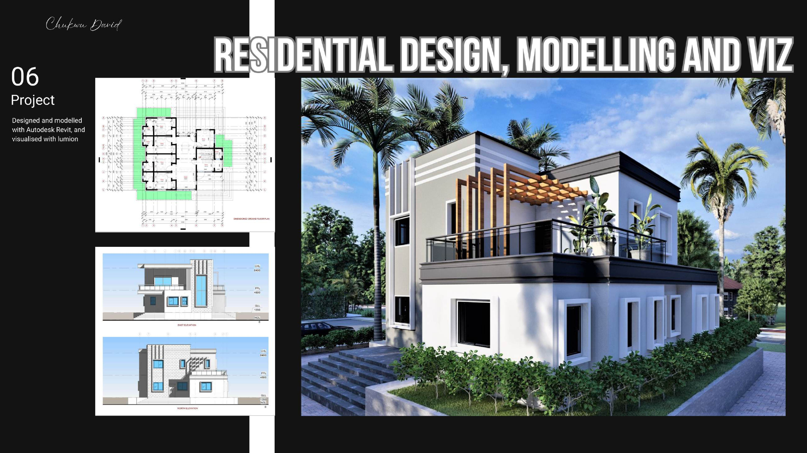
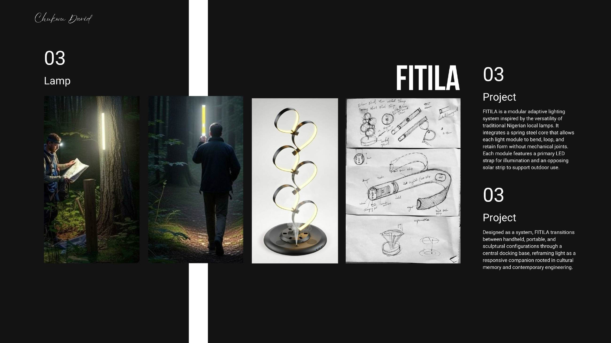

Ideas into things that matter.
dxinception works at the intersection of architecture, art, design, technology and digital fabrication — creating spaces, objects, experiences and opportunities rooted in culture and built for the future.


Built from curiosity.
We move between disciplines because the most interesting problems rarely stay inside one box.




What we do.
From an early sketch to a finished object, environment or brand system.
Architecture
Architectural concepts, interiors, 3D modelling, visualisation and design development.
Sculpture & Art
Site-specific sculpture, installations, fountains, bas-reliefs and art-led environments.
Product Design
Objects and functional products that connect material, culture, utility and story.
Brand & Visuals
Identity, graphics, signage, digital content and visual systems for ambitious ideas.
Creative Technology
AI-assisted design, digital fabrication, interactive concepts and emerging creative tools.
Innovation Programs
Youth challenges, workshops and community platforms designed to move ideas toward action.
Innovative Creative Community
A community platform for underserved creatives, students, hobbyists and professionals to learn, collaborate, create and access opportunity.
Explore ICC ↗Young Ingenuity
We don't want ideas to end at a pitch. Young Ingenuity is being shaped as a pathway from idea → prototype → market → enterprise.
Explore Young Ingenuity ↗Why dxinception?
We combine a designer's eye with a builder's mindset and an entrepreneur's instinct for turning possibilities into tangible outcomes.
Cross-disciplinary
Architecture, sculpture, technology and design are treated as connected tools.
Earth-responsive
We explore local materials, cultural references, sustainability and context.
Impact-minded
Our work aims to create value for clients, communities and the next generation.
Have an idea worth building?
Tell us what you're imagining — a space, sculpture, product, identity, technology concept or partnership.
hello@dxinception.com ↗